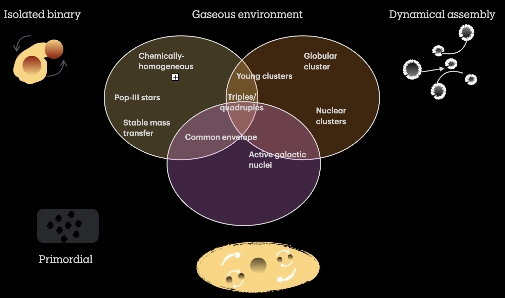
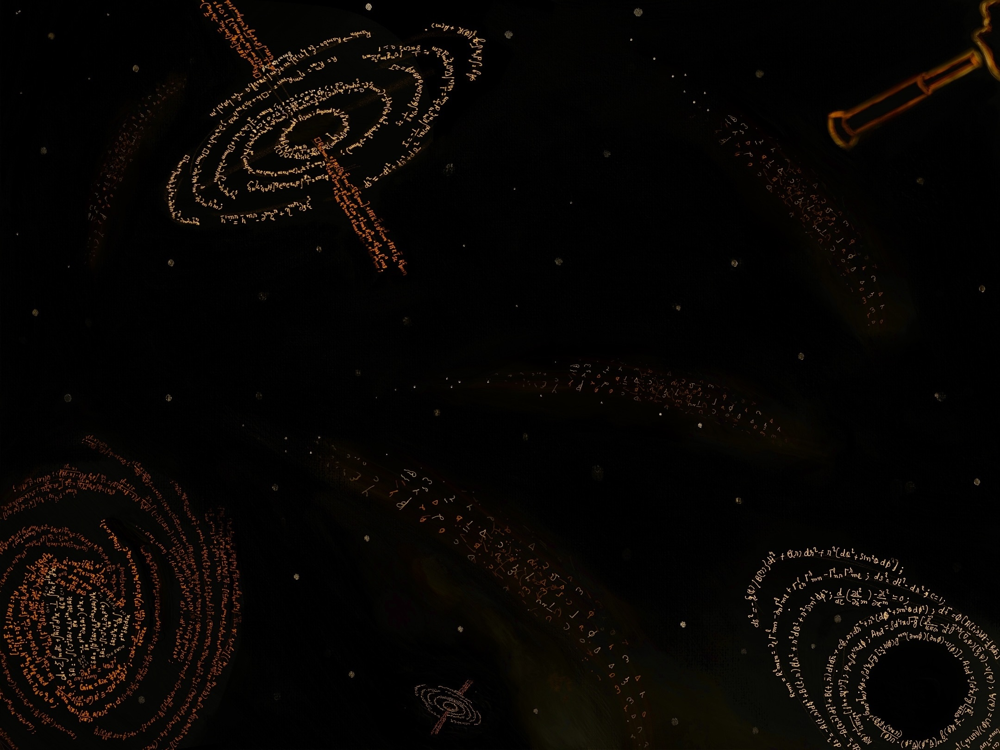

Artwork
I enjoy using artistic illustrations as a way to communicate science. Here are some artworks inspired by my research. If you wish to use any of these images, please access them through this GitHub link and kindly cite my website.Eccentric binary orbit

Binary Formation channels

Artwork Title 3
Many of my illustrations have been cited and featured on LIGO-India and LVK science outreach platforms, including:
- LIGO-India GW SciArt Theme Challenge
- Cosmic Whispers
- LIGO Scientific Collaboration Outreach
- A Symphony of Giant Monsters
You can also find more of my artwork on my Instagram page: kansartbook.